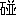

用 語
01 跳板＝ちょんちょん 21 アメリカ用語 41 手牌の呼び名 02 壁牌 22 ばった 42 （H22.6.6） 03 海底自摸/河底放銃 23 ナシナシ＆アリアリ 43 砌（H22.6.7） 04 放銃と栄和 24 対々和 44 于は宇宙のウ(H22.7.5) 05 幢の意味 25 門と面 45 雀頭(H22.11.10) 06 ノム九牌/老頭牌 26 二と両 46 アリスとか(H23.10.18) 07 立直の意味 27 裏筋 47 テンパる(H23.12.21) 08 ツモピン 28 満貫の意味 48 副露，吃，石並，杠の語源
(H25.01.11)
09 九蓮宝灯の語源 29 “子”という字 49 放銃について
(H26.02.15)10 百萬之冠 30 搭子 50 11 おた風 31 「場」の意味 41 12 門断平とは 32 雅名 42 13 人和 33 ナシナシと完先 43 14 牌 34 荘家と散家 44 15 栄の意味 35 清と純と混 45 16 “発”という字 36 面子 17 タテ 37 ２軒リーチ 18 ワン/まん、どちら? 38 ツモの「摸」 19 飜牌/翻牌 39 ダブリ面子の名前 20 連荘/輪荘 40 スッタン